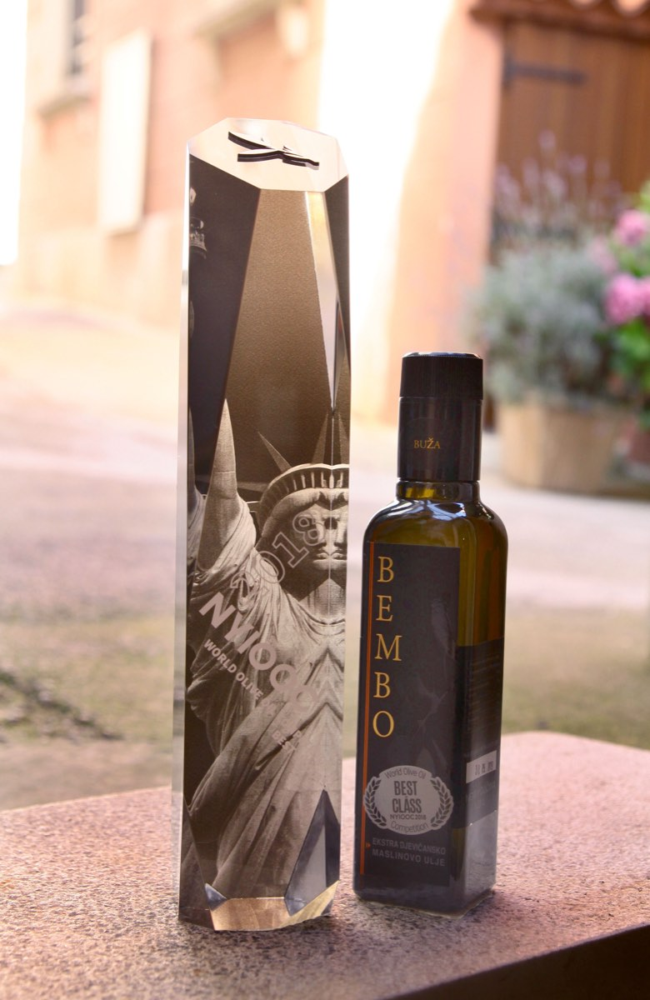
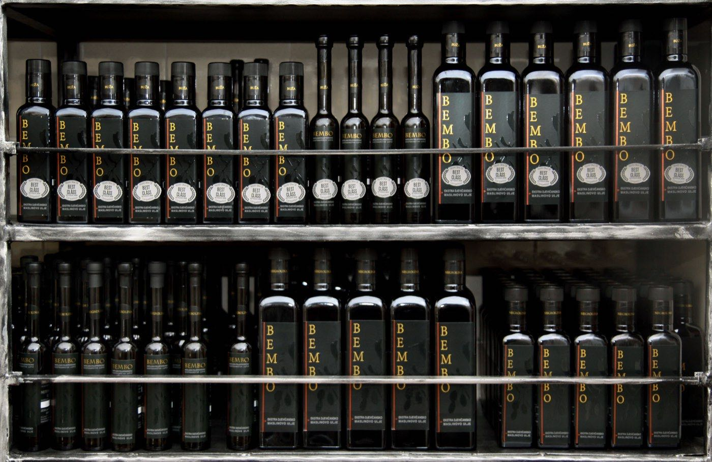
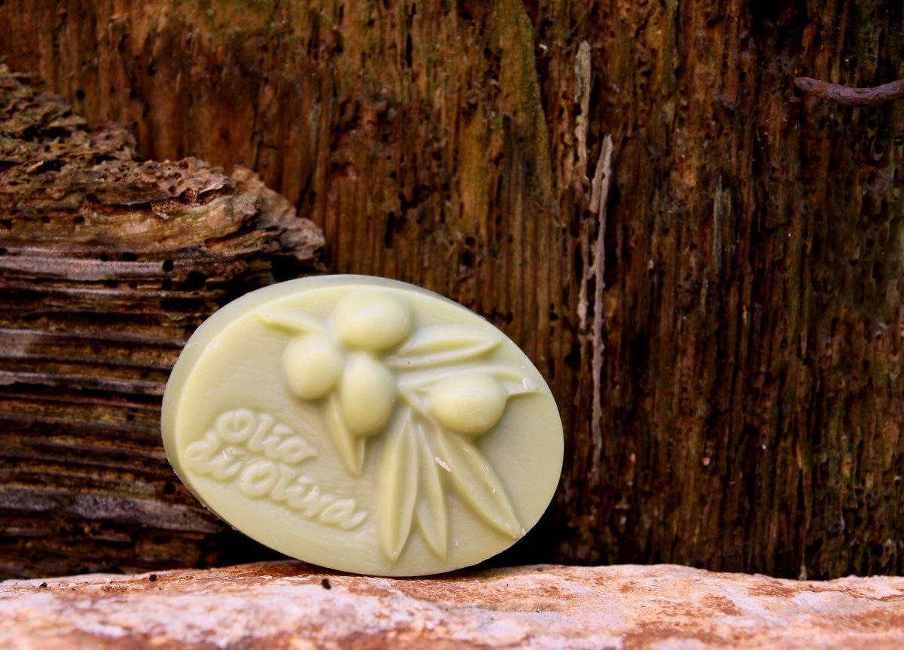
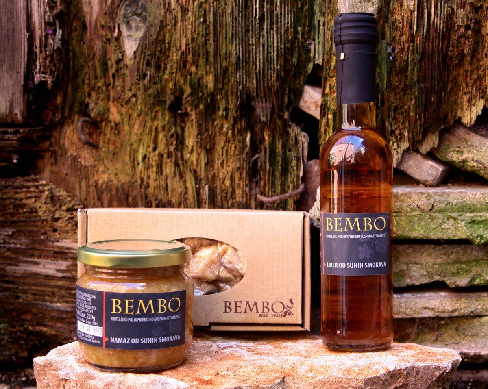
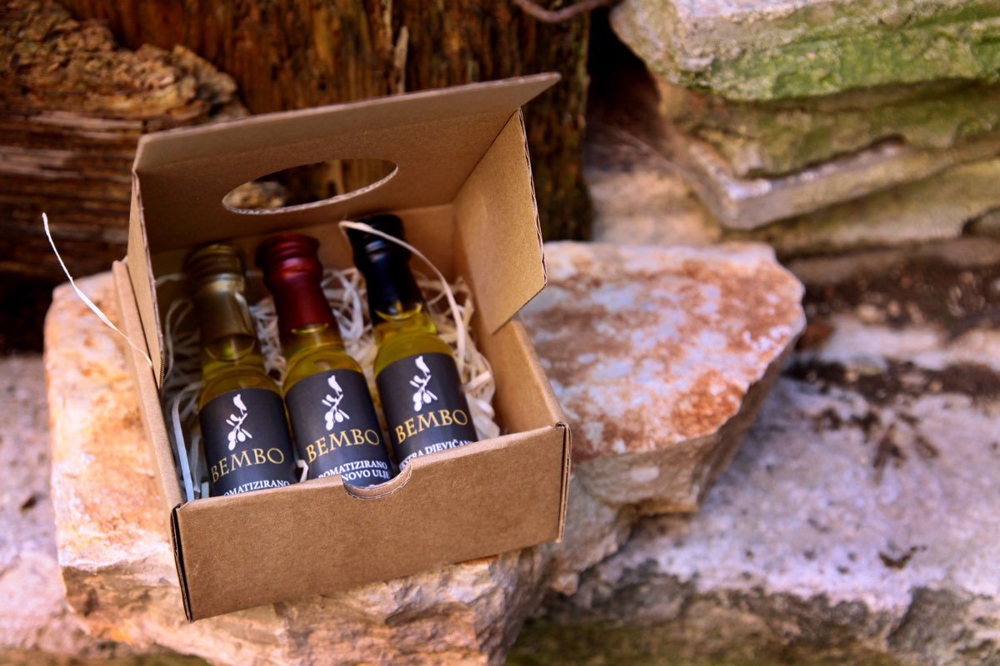
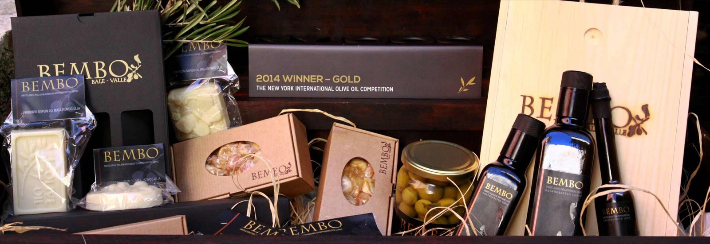
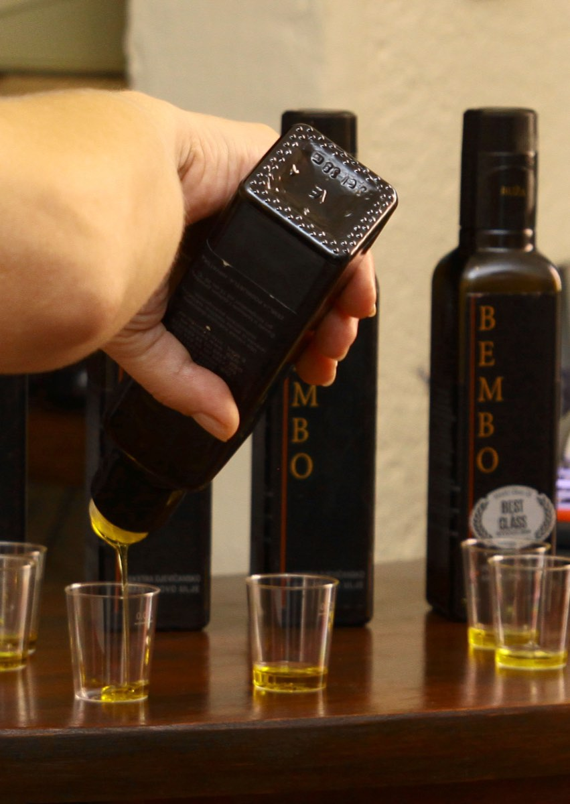

Buža
Monosortno
Izrazito svjež miris zelene rajčice, voćni okus ploda masline, ugodna gorčina i jače naglašena pikantnost, zahvaljujući kamenitom terenu i mikrolokaciji.
Ulja i proizvodi
Pet monosortnih ulja i jedan cuvée, iz maslinika obitelji Lupić oko Bala. Uz ulje: prirodni sapuni, masline u salamuri i proizvodi od smokava.

Sorte
Monosortno
Izrazito svjež miris zelene rajčice, voćni okus ploda masline, ugodna gorčina i jače naglašena pikantnost, zahvaljujući kamenitom terenu i mikrolokaciji.
Monosortno
Intenzivan miris, osnovni voćni okus ploda masline, aroma zelenih badema s tragovima artičoke i radiča. Izražena pikantnost i gorčina.
Monosortno
Intenzivan miris ploda masline i jabuke, blaga gorčina i pikantnost.
Monosortno
Vrlo često s aromom zelenih badema i svježe trave, osnovni voćni okus ploda masline, umjerena gorčina i pikantnost.
Posebna stara baljanska sorta
Svjež miris s notom šumskog voća, osnovni okus ploda masline, nježna gorčina koju slijedi izrazita pikantnost.
Mješavina sorti
Izbalansirano ekstra djevičansko ulje od različitih sorti maslina: svjež miris pokošene trave, voćni okus ploda masline, umjerena pikantnost.

Iz našeg gospodarstva

Gospodarstvo je djelatnost obogatilo izradom prirodnih sapuna od maslinovog ulja. Receptura je testirana pri Zavodu za javno zdravstvo, stoga postoji garancija zdravstveno ispravnih proizvoda.

Iz našeg smokvika s 400 stabala: namaz od suhih smokava i liker od suhih smokava, uz suhe smokve u kutijama.

Ulja, sapuni, masline u salamuri i smokve složeni u kutije i drvene škrinjice, za poklon ili za ponijeti iz Bala.

Česta pitanja

Pošaljite upit e-mailom na info@bembo.eu ili nazovite 099 689 3816. Kod slanja poštom plaćanje je pouzećem, a trošak dostave snosi kupac.
Da, za veće narudžbe postoji mogućnost rabata. Javite nam koje ulje i koliko boca trebate.
U našoj kušaonici na Trgu Tomaso Bembo 14 u Balama. Tamo možete kušati i kupiti ulje, masline u salamuri i prirodne sapune.
Posebna stara baljanska sorta masline. Ulje ima svjež miris s notom šumskog voća, nježnu gorčinu i izrazitu pikantnost.
Od maslinovog ulja. Receptura prirodnih sapuna testirana je pri Zavodu za javno zdravstvo.
Narudžba
Kod slanja proizvoda poštom plaćanje je pouzećem, a trošak dostave snosi kupac. Za veće narudžbe postoji mogućnost rabata.